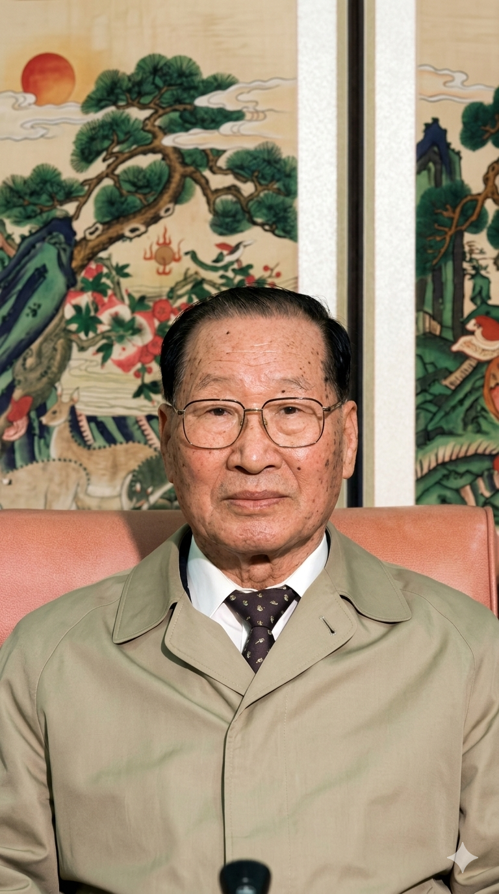
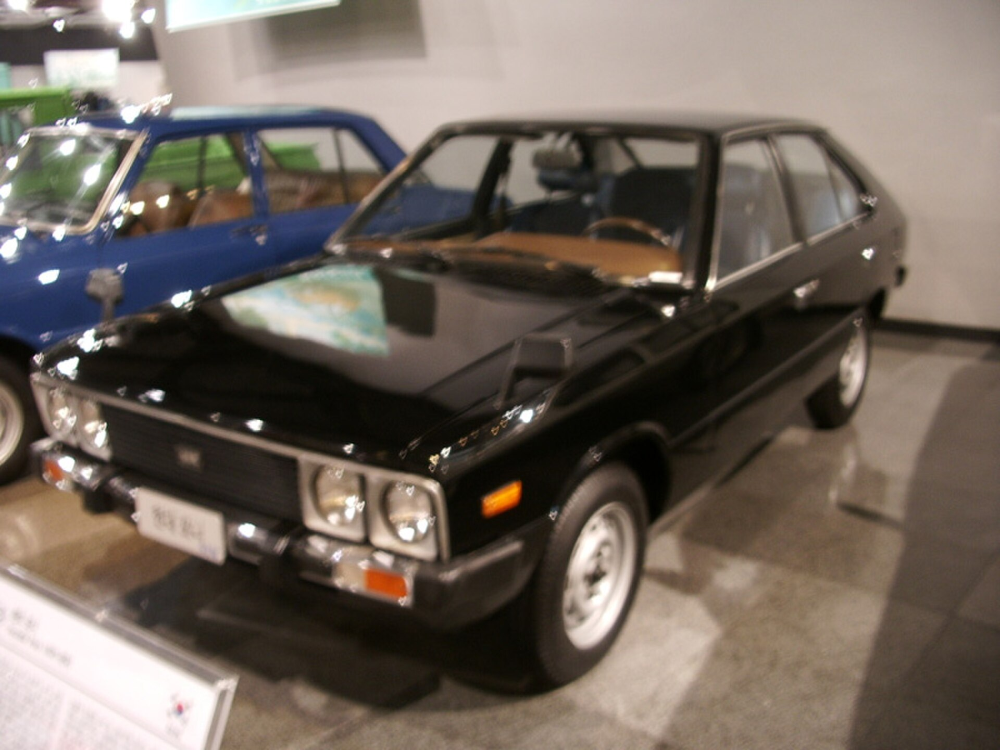

המייסד: צ'ונג ג'ו־יונג, 1915–2001

צ'ונג ג'ו־יונג היה מן הדמויות המרכזיות בבניית הכלכלה התעשייתית של קוריאה הדרומית. הוא נולד למשפחה כפרית ענייה, צמח מתוך עבודה פיזית ויזמות קטנה, ובנה בהדרגה את קבוצת Hyundai — קונצרן ענק שפעל בבנייה, ספנות, תעשייה כבדה, תשתיות ורכב.
סיפור חייו חשוב להבנת יונדאי משום שהוא מייצג את השינוי שעברה קוריאה הדרומית לאחר המלחמה: מעבר ממדינה הרוסה וענייה לכלכלה תעשייתית יצואנית. צ'ונג לא היה רק איש רכב; הוא היה בונה תשתיות, יזם לאומי ואיש עסקים שהאמין כי קוריאה יכולה לייצר בעצמה מוצרים מורכבים.
מקור השם Hyundai
Hyundai פירושו בקוריאנית בקירוב “מודרני” או “עכשווי”. השם מבטא שאיפה: לא לשמר מסורת ישנה, אלא ליצור קוריאה תעשייתית חדשה. לכן השם מתאים במיוחד לרוח החברה — פיתוח מהיר, תכנון לעתיד והשתלבות בשוק העולמי.
מה היה לפני המכונית?
יונדאי לא התחילה כרכב אלא כחלק מקבוצה תעשייתית רחבה. פעילות הבנייה והתשתיות העניקה לקבוצה ניסיון בניהול פרויקטים עצומים, עבודה עם ממשלה, גיוס כוח אדם והקמת מערכות תעשייתיות. כאשר יונדאי נכנסה לרכב, היא הביאה איתה יכולת ארגונית יותר מאשר מסורת מכונית ארוכה.
הדגם המכונן: Hyundai Pony
ה־Pony של שנות ה־70 הייתה נקודת מפנה. לפני כן יונדאי הרכיבה את Ford Cortina, אך Pony סימנה רצון לייצר מכונית קוריאנית עצמאית. התכנון שילב ידע בינלאומי: עיצוב אירופי, מכלולים שנרכשו או נלמדו משותפים זרים, והרכבה קוריאנית. מבחינה תרבותית, זו הייתה הצהרה כי קוריאה אינה רק מרכיבה — היא שואפת להיות יצרנית.

המעבר ממחיר לאיכות
בכניסתה לשווקים מערביים יונדאי סבלה מתדמית של מכוניות זולות ופשוטות. במשך שנים השקיעה החברה באחריות ארוכה, בקרת איכות, מרכזי עיצוב בינלאומיים ופיתוח עצמאי. התוצאה הייתה מעבר הדרגתי ממותג מחיר למותג שנמדד גם בעיצוב, בטיחות וטכנולוגיה.
דגמי מפתח
Pony סימלה עצמאות תעשייתית. Excel פתחה דלת לשווקים מערביים. Elantra ו־Sonata ביססו את יונדאי כמותג משפחתי עולמי. Tucson ו־Santa Fe הכניסו אותה למרכז שוק רכבי הפנאי. IONIQ 5 מסמלת את השאיפה החדשה: להיות מובילה גם בעידן החשמלי.
מורשת וביקורת
יונדאי מייצגת עלייה מהירה מאוד. המורשת שלה היא יכולת ללמוד, לשפר ולהדביק פערים. עם זאת, ההיסטוריה שלה קשורה גם למבנה הקונצרנים הקוריאניים הגדולים — צ'אבולים — המעוררים דיון על כוח כלכלי מרוכז, יחסי עבודה והשפעה פוליטית.